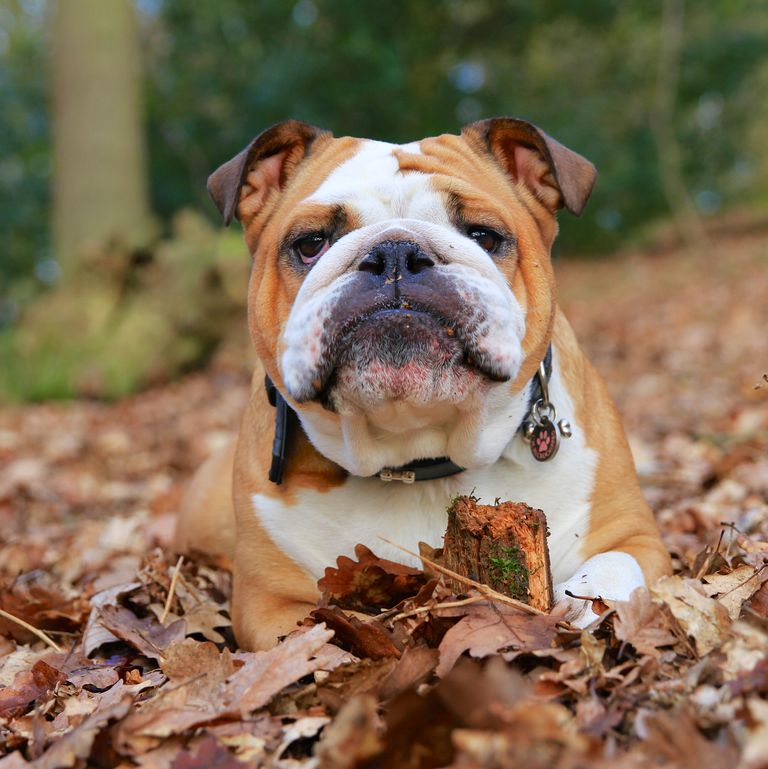
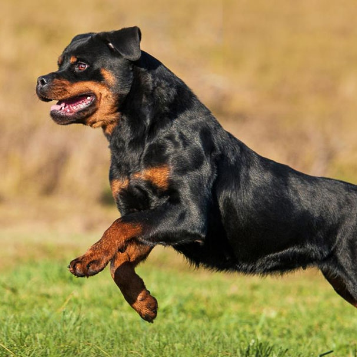
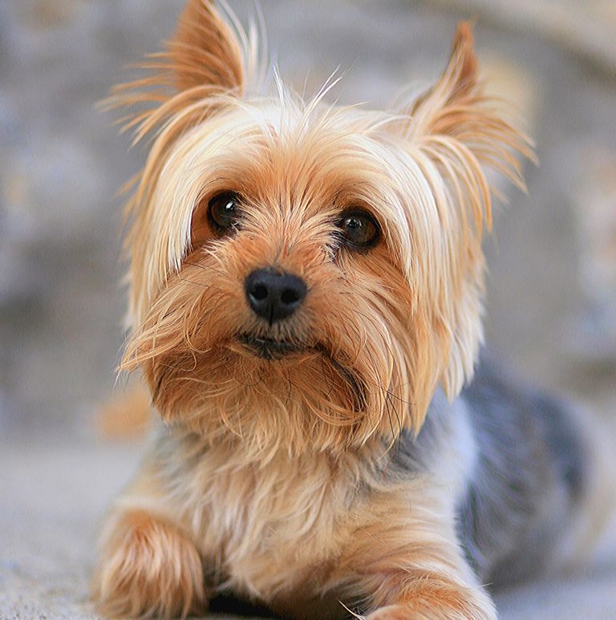
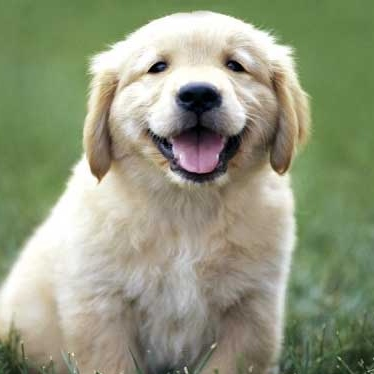

BEAGLE
CURIOS, PRIETENOS, VESEL
● ÎNĂLȚIME: 33cm
● GREUTATE: 9kg
● DURATA DE VIAȚĂ: 10-15 ani
● GRUPĂ: COPOI
Pe lângă faptul că Beagel este un excelent câine de vânătoare și un partener loial, este, de asemenea extraordinar de vesel, nostim și, din cauza expresiei rugătoare — drăguț. Sunt crescuți să vâneze în haită, așa că le place compania și sunt în general nonșalanți.
PENTRU UN FUN FACT DESPRE RASA BEAGLE, APASĂ PE BUTON!
GOLDEN RETRIEVER
PRIETENOS, INTELIGENT, FIDEL
● ÎNĂLȚIME: 60cm
● GREUTATE: 30-35kg (MASCUL), 25-30kg (FEMELĂ)
● DURATA DE VIAȚĂ: 10-12 ani
● GRUPĂ: SPORTIVĂ
Golden Retriever, un gundog scoțian de mare frumusețe, se numără printre cele mai populare rase de câini din lume. Ei sunt buni la vânătoare și serioși la câmpul muncii, ca îndrumători pentru orbi și în expediții de salvare, le plac evenimentele competitive și sunt plini de viață.
PENTRU UN FUN FACT DESPRE RASA GOLDEN RETRIEVER, APASĂ PE BUTON!
HUSKY SIBERIAN
LOIAL, SOCIABIL, NEASTÂMPĂRAT
● ÎNĂLȚIME: 53-60cm (MASCUL), 50-55cm (FEMELĂ)
● GREUTATE: 20-27kg (MASCUL), 15-22kg (FEMELĂ)
● DURATA DE VIAȚĂ: 12-14 ani
● GRUPĂ: LUCRĂTOARE
Husky-ul siberian, un câine cu blana deasă, de dimensiuni medii și o mare rezistență, a fost dezvoltat pentru a lucra in haită, trăgând încărcături ușoare la viteze moderate pe marile suprafețe înghețate. Husky sunt prietenoși, pretențioși și demni.
PENTRU UN FUN FACT DESPRE RASA HUSKY, APASĂ PE BUTON!
CIOBĂNESC GERMAN
ÎNCREZĂTOR, CURAJOS, INTELIGENT
● ÎNĂLȚIME: 60-66cm (MASCUL), 55-60cm (FEMELĂ)
● GREUTATE: 29-40kg (MASCUL), 22-31kg (FEMELĂ)
● DURATA DE VIAȚĂ: 7-10 ani
● GRUPĂ: CIOBĂNEASCĂ
Cunoscut ca cel mai bun câine-muncitor universal, Ciobănescul German este un câine de talie mare, agil, musculos, de caracter nobil și inteligență ridicată. Loial, încrezător, curajos și ferm, Ciobănescul German este cu adevărat plăcerea iubitorului de câini.
PENTRU UN FUN FACT DESPRE RASA CIOBANESC GERMAN, APASĂ PE BUTON!
PUDEL
ACTIV, MÂNDRU, FOARTE INTELIGENT
● ÎNĂLȚIME: peste 38cm (STANDARD)
● GREUTATE: 27-31kg (MASCUL), 18-22kg (FEMELĂ)
● DURATA DE VIAȚĂ: 10-18 ani
● GRUPĂ: NONLUCRĂTOARE
Fie standard, miniatură sau Toy, fie negru, alb sau culoarea caisei, Pudelul se află cu mândrie printre adevărații aristocrați ai DogDomului. Sub stratul buclat, hipoalergenic este un atlet elegant și însoțitor pentru toate motivele și anotimpurile.
PENTRU UN FUN FACT DESPRE RASA PUDEL, APASĂ PE BUTON!
BULLDOG
PRIETENOS, CURAJOS, CALM

● ÎNĂLȚIME: 35-38cm
● GREUTATE: 22kg (MASCUL), 18kg (FEMELĂ)
● DURATA DE VIAȚĂ: 8-10 ani
● GRUPĂ: NONLUCRĂTOARE
Blând dar curajos, prietenos dar demn, Bulldog este un câine de talie mică, musculos a cărui "față amară" este simbolul universal al curajului și tenacității. Acești companioni docili, loiali se adaptează bine la oraș sau la țară.
PENTRU UN FUN FACT DESPRE RASA BULLDOG, APASĂ PE BUTON!
BULLDOG FRANCEZ
ADAPTABIL, JUCĂUȘ, DEȘTEPT

● ÎNĂLȚIME: 28-33cm
● GREUTATE: sub 12kg
● DURATA DE VIAȚĂ: 10-12 ani
● GRUPĂ: NONLUCRĂTOARE
Bulldog-ul francez este unic, cu urechile largi de liliac, este una dintre cele mai populare rase de câini mici din lume, în special în rândul locuitorilor orașelor. Frenchie este jucăuș, alert, adaptabil și complet irezistibil.
PENTRU UN FUN FACT DESPRE RASA BULLDOG FRANCEZ, APASĂ PE BUTON!
ROTTWEILER
IUBITOR, LOIAL, APĂRĂTOR CREDINCIOS

● ÎNĂLȚIME: 60-68cm (MASCUL), 55-63cm (FEMELĂ)
● GREUTATE: 43-61kg (MASCUL), 36-45kg (FEMELĂ)
● DURATA DE VIAȚĂ: 9-10 ani
● GRUPĂ: LUCRĂTOARE
Rottweiler este o rasă de lucru robustă de mare putere, coborâtă de la mastifii legiunii romane. Un prieten bun și protector în cadrul cercului familiei, Rottie observă lumea exterioară cu o atitudine rezervată, dar sigură pe sine.
PENTRU UN FUN FACT DESPRE RASA ROTTWEILER, APASĂ PE BUTON!
YORKSHIRE TERRIER
AFECTUOS, VIOI, LOIAL

● ÎNĂLȚIME: 17-20cm
● GREUTATE: 3kg
● DURATA DE VIAȚĂ: 11-15 ani
● GRUPĂ: JUCĂUȘĂ
Sub stratul de blană subțire, lucios, lung până la podea al unui Terrier Yorkshire bate inima unui Terrier teribil și de vechime. Yorkii și-au câștigat viața ca ratări în mine și mori cu mult înainte de a deveni lapodii de femei victoriane.
PENTRU UN FUN FACT DESPRE RASA YORKSHIRE, APASĂ PE BUTON!
BRAC GERMAN
PRIETENOS, ÎNȚELEPT, CUMINTE
● ÎNĂLȚIME: 58-60cm (MASCUL), 53-58cm (FEMELĂ)
● GREUTATE: 24-31kg (MASCUL), 20-27kg (FEMELĂ)
● DURATA DE VIAȚĂ: 10-12 ani
● GRUPĂ: SPORTIVĂ
Bracul German are dimensiuni medii și este un gundog entuziast al tuturor meseriilor care se dezvoltă într-un exercițiu energic, o pregătire pozitivă și o multă dragoste. Persoanele GSP numesc companionii lor aristocrați "pointerul perfect".
PENTRU UN FUN FACT DESPRE RASA BRAC GERMAN, APASĂ PE BUTON!
BOXER
ISTEȚ, IUBITOR DE DISTRACȚIE, ACTIV
● ÎNĂLȚIME: 58-63cm (MASCUL), 54-60cm (FEMELĂ)
● GREUTATE: 29-36kg (MASCUL), 22-29kg (FEMELĂ)
● DURATA DE VIAȚĂ: 10-12 ani
● GRUPĂ: LUCRĂTOARE
Loialitate, afecțiune, inteligență, etica muncii și aspectul: Boxerii sunt pachetul întreg. Isteț și alert, uneori silly, dar întotdeauna curajoas, Boxerul a fost printre cele mai populare rase de câini de foarte mult timp.
PENTRU UN FUN FACT DESPRE RASA BOXER, APASĂ PE BUTON!
LABRADOR RETRIEVER
PRIETENOS, ACTIV, SOCIABIL
